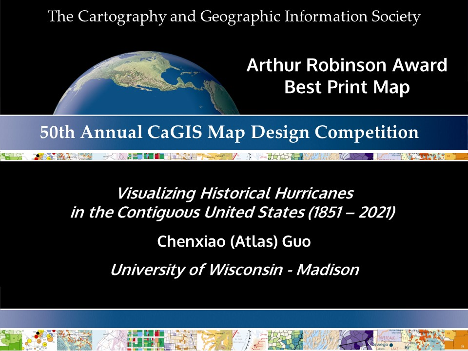
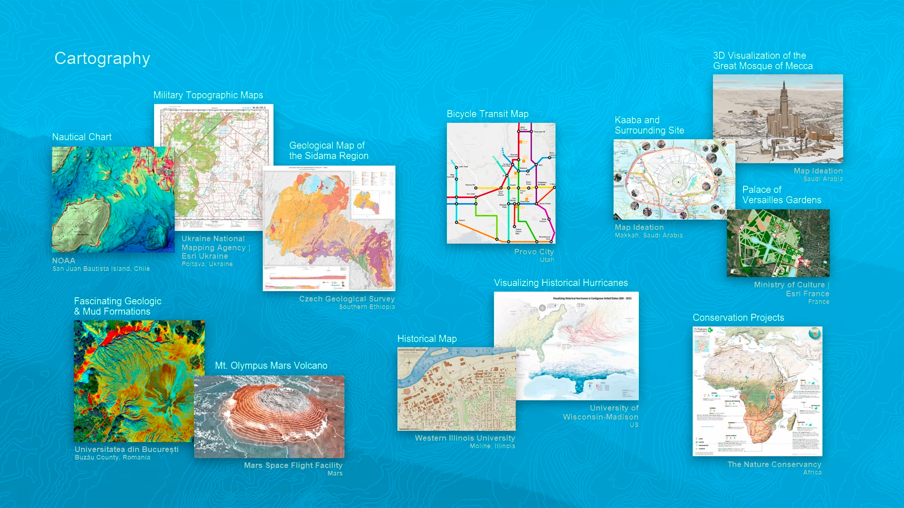
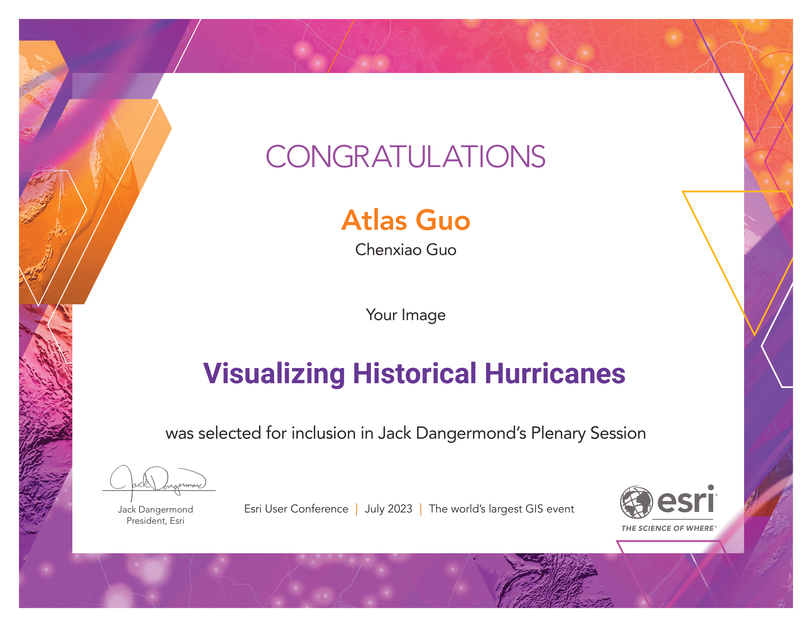
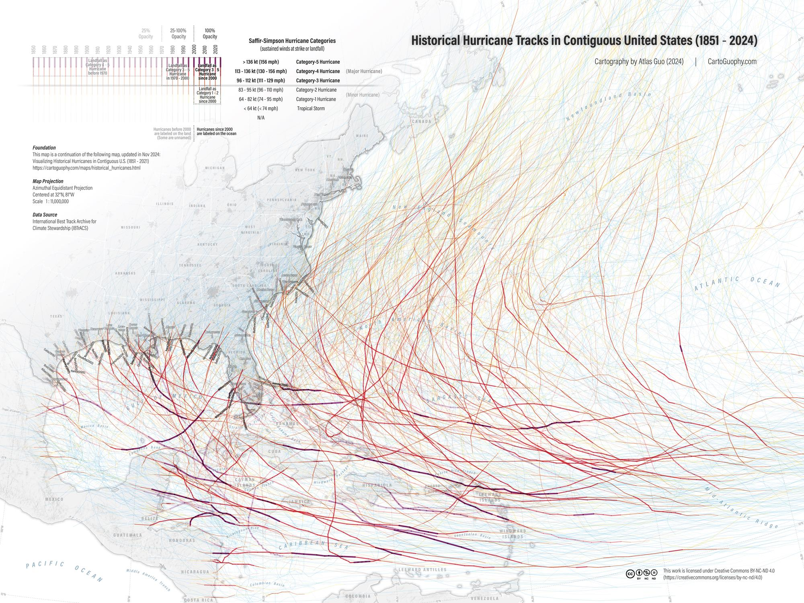

This map is the winner of Arthur Robinson Static Print Map Award in 50th CaGIS Map Design Competition.
It was also personally selected by Jack Dangermond, President of Esri, to be included in the Plenary Session (about 17:22) of 2023 Esri User Conference.
 This map product is a combination of three geovisualizations about historical
hurricanes in contiguous U.S. from different perspectives.
1. The Panoramic “Hexagon” Map (bottom):
With orthographic “World From Space” projection, this map lines up the major
Atlantic coastal area of the U.S. horizontally. Based on 10-square-kilometer hexagon
unit, the choropleth (color) shows the total number of storms, and the piled bar
chart (length) shows the storm frequencies in recent 10, 20, 50, 100, and 171 (all
accessible history) years, correspondingly. Urban area is colored in light gray, and
necessary labels for major coastal cities are displayed.
2. The “Concentric Ring” Map (top-left):
With same universal unit as the bottom map (10-sq-km hexagon), this map uses
concentric rings to compare the number of the storm events every decade in recent 50
years: i.e. the center (core) indicates oldest decade (1970s) and edge ring
indicates the most recent one (2010s). The darker the ring color is, the more storms
this hexagon statistical unit has witnessed.
3. The “Historic Hurricane Tracks” Map (top-right):
With all the hurricane tracks’ intensity displayed in different color-width
combination, the storm category (Saffir-Simpson Hurricane Wind) is intuitively
visualized at corresponding location. Storms in recent 20 years have full opacity,
and various transparency is applied according to its year, imitating the fading out
history. As for the label typography, black text indicates storms in recent 20
years, aligned on the right side of coast; grayer text indicates storms earlier,
aligned on the left side of coast; and additionally, bold text illustrates major
hurricanes (category-3 and above). The storm’s year is added to the bracket after
the name, while some historic storms even do not have a name.
Additionally, auxiliary elements (graticule, state boundary, ocean basemap) and
graphic designs (tri-partition layout, gradient effect, drop shadow, universal
condensed “Acumin” font) are deployed for visual legibility and cartographic
aesthetics.
The major data source is the International Best Track Archive for Climate
Stewardship (IBTrACS) during 1851 to 2021, providing the location and intensity for
global tropical cyclones. Additional data sources include U.S. Census Bureau, ArcGIS
Online, and Esri’s World Ocean Basemap and Light Gray Basemap.
As Hurricane Helene intensifies in late September of 2024, discussions about the disaster preparedness of Florida and Georgia are growing. It reminds me of the map I created two years ago about historical hurricanes, so I expanded the hurricane trajectory section with updated data, including Hurricane Ian (2022) and Idalia (2023). Hope people in the affected areas could learn from the past experiences to better handle the upcoming challenges. Pray for everyone's safety.
On Nov 30, 2024, the National Hurricane Center (NHS) annouces the offical end of 2024 Atlantic Hurricane Seanson on Nov 30, with a record-breaking ramp up following a peak-season lull. As the finale, I updated this map with 18 new tracks of storms, and 5 more labels of landed hurricanes: Beryl (Juy), Debby (Aug), Francine (Sep), Helene (Sep), and Milton (Oct), in 2024.
 Download Compressed Image